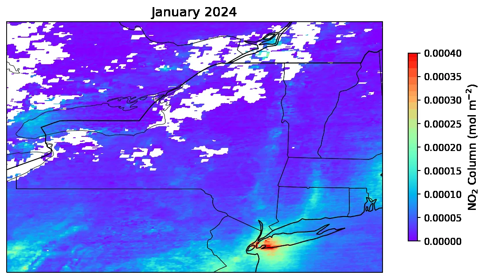

CURRENT RESEARCH · UNIVERSITY AT BUFFALO
Estimating emissions with satellite observations
TEMPO measures nitrogen dioxide over North America several times a day. These observations help us study where pollution accumulates and how its distribution changes over time.
